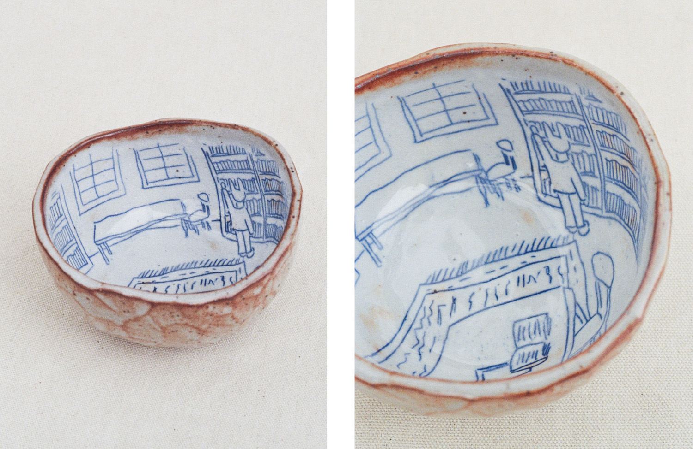

Hi! I'm Julien, a potter based in Portland, Maine. I make handbuilt, whimsically-illustrated functional pottery.
This website is still under construction; hopefully one day you'll be able to come here and look at a gallery of my work. Maybe even buy things in a shop.
The best way to get any info about my pottery, sales, etc, is by subscribing to my newsletter. (For those who are already subscribed to "Why Am I Making This?", this is a SEPARATE newsletter. You need to subscribe to this one separately.)
You can also find me on instagram and tumblr.
If you want to get in touch, you can try instagram DMs (which I answer sporadically), subscribe to the newsletter above and wait for a chance to reply to a missive via email, or try to guess my pottery email. I'll give you a hint. It's at this domain and it's pretty easy to guess. I may not be the quickest to reply, though - sorry in advance that I'm so elusive!
